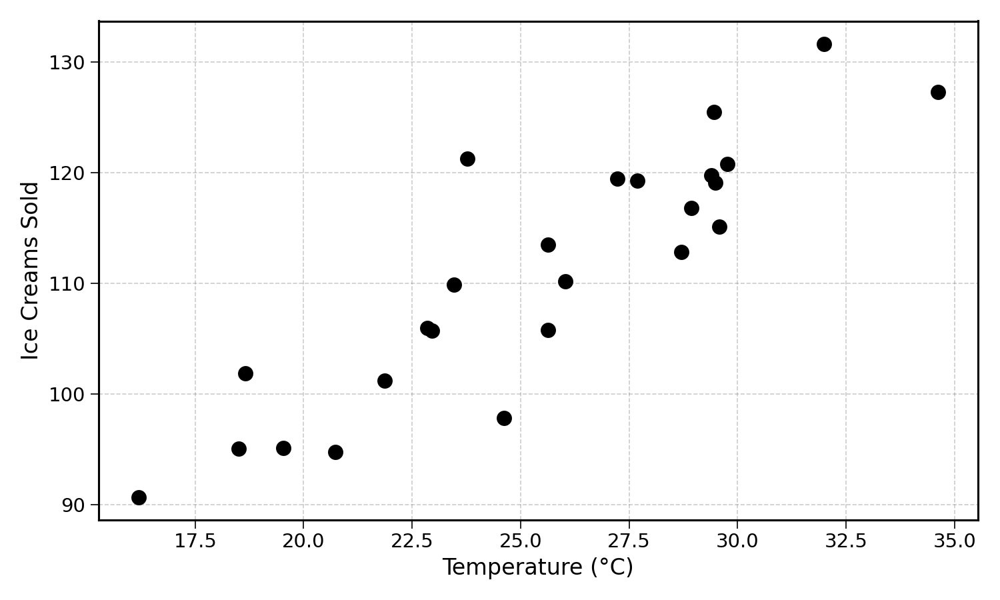
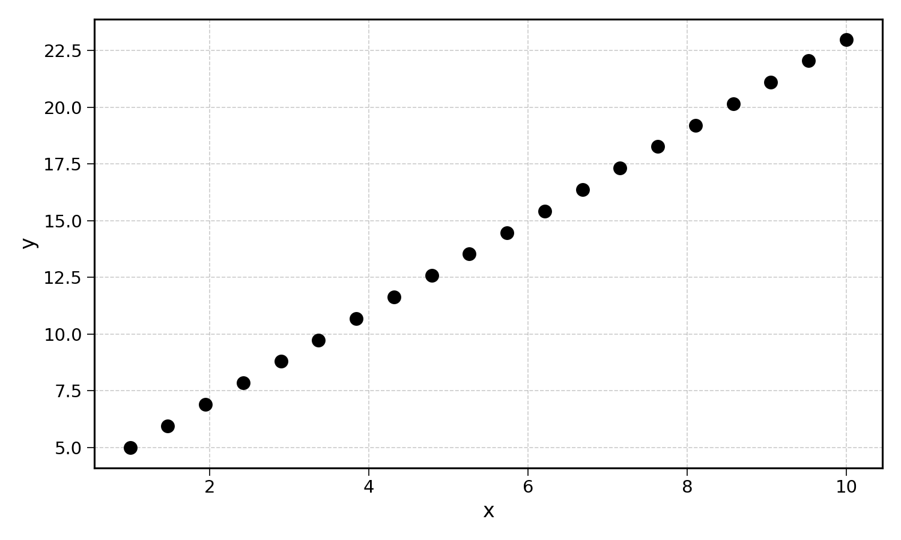
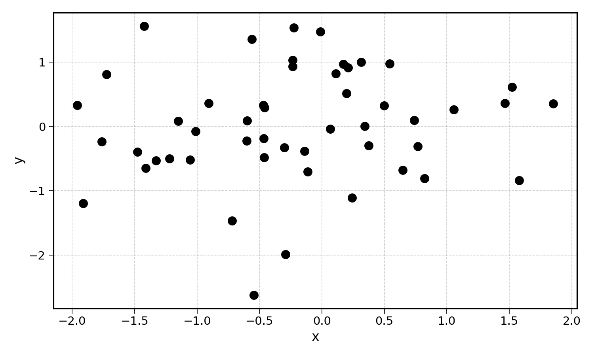
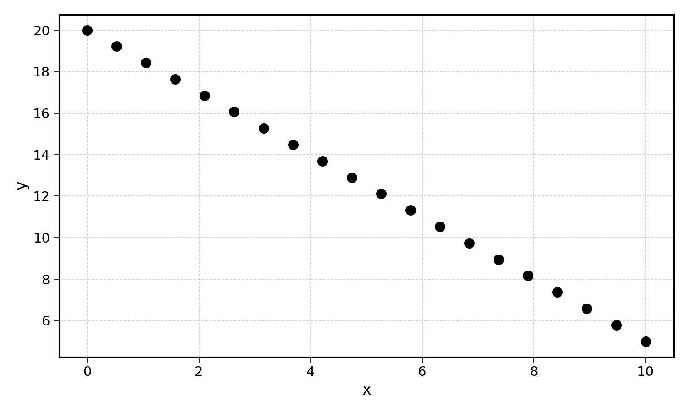
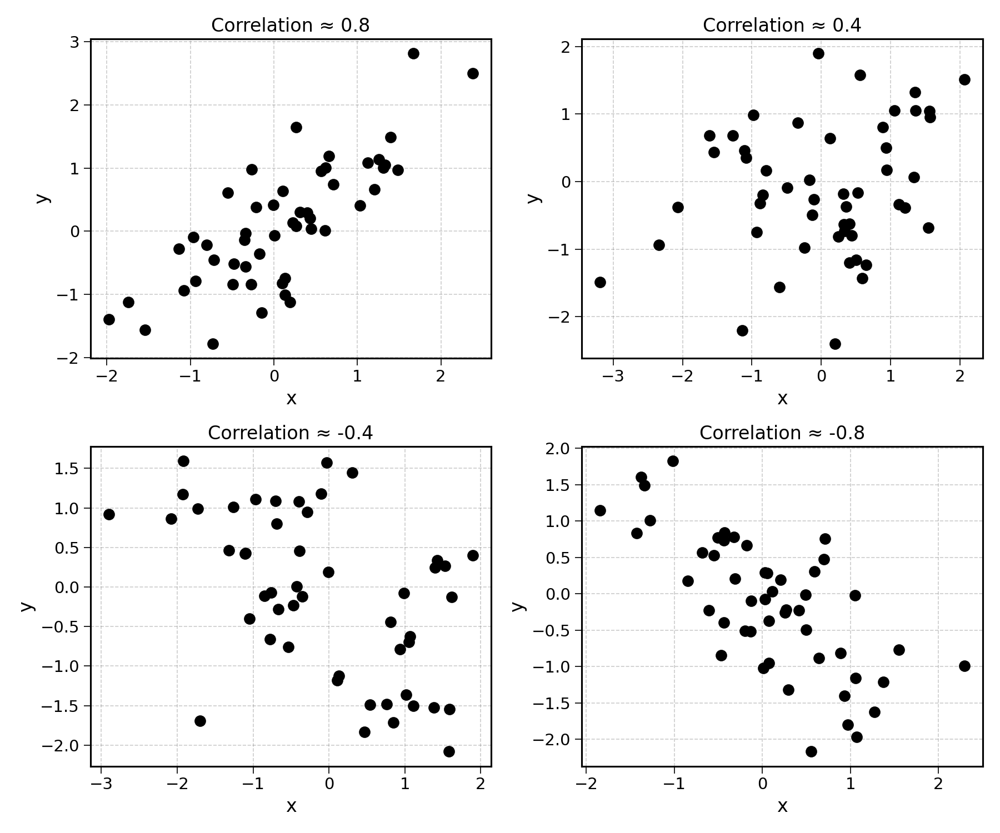
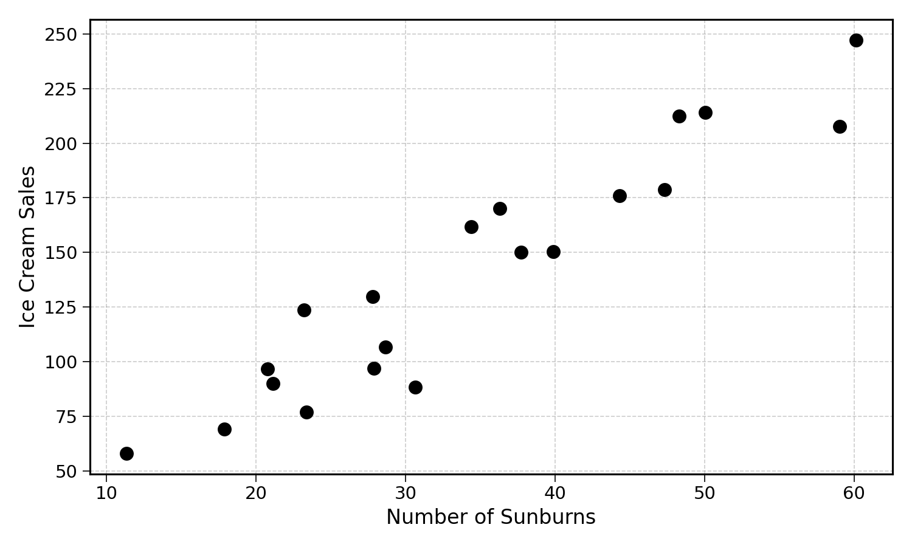
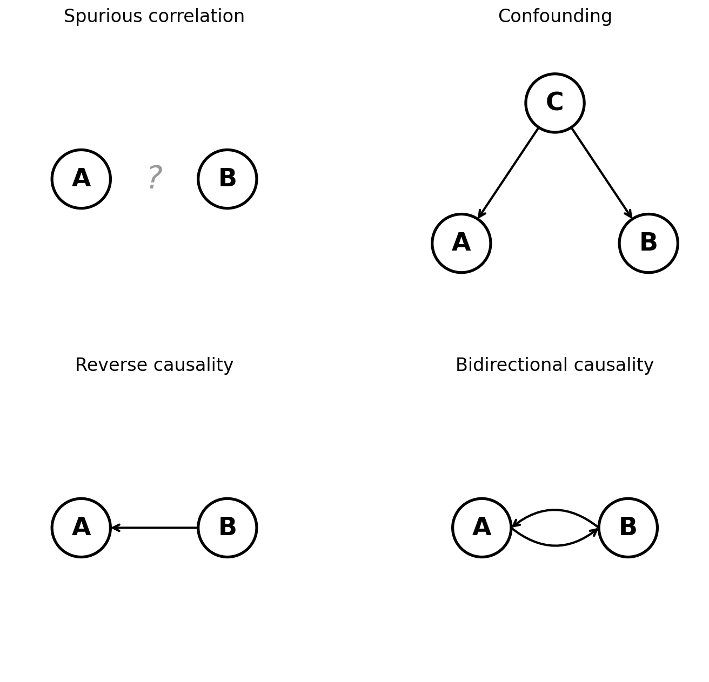

22 Interpreting Linear Regression Coefficients
We have to be careful when interpreting linear regression model coefficients. This chapter will explore what these coefficients mean, and what they do not.
22.1 Basic interpretation
Consider the simple linear regression from previous chapters:
\[ \text{Ice Cream Sales} = 2 + 20 \times \text{Temperature} \]
The coefficient of temperature (\(20\)) can be read as:
An increase of \(1\) degree Celsius increases predicted ice cream sales by \(20\).
Now consider the multiple linear regression:
\[ \text{Ice Cream Sales} = 10 + 25 \times \text{Temperature} - 3 \times \text{Rainfall} \]
The coefficient of temperature (\(25\)) can be read as:
All else equal, an increase of \(1\) degree Celsius increases predicted ice cream sales by \(25\).
The coefficient of rainfall (\(-3\)) can be read as:
All else equal, an increase of \(1\) millimetre of rainfall decreases predicted ice cream sales by \(3\).
The phrase “all else equal” is important. In a multiple linear regression, a coefficient represents the effect of one feature while holding all others constant. This is a key distinction from a simple linear regression.
Generally, higher coefficients (whether positive or negative) indicate a stronger relationship between the input and the output variable. However, remember that coefficients depend on the scale of both the input and the output variables. A coefficient of \(25\) for temperature (measured in degrees) and a coefficient of \(-3\) for rainfall (measured in millimetres) cannot be directly compared. If rainfall was measured in centimetres instead, the coefficient would be \(-30\) instead of \(-3\), even though the underlying relationship is the same.
22.2 Correlation and causation
Does this mean that an increase in temperature causes an increase in ice cream sales? It may seem so, and yes, an increase in temperature may actually cause an increase in ice cream sales. Looking at my personal ice cream consumption, I am more likely to buy an ice cream when it is warm outside.
But there are many other factors correlated with warm temperatures. In Western Europe, the two warmest months of the year, July and August, are also the months of school holidays. This may also have an impact on ice cream consumption.
22.2.1 What is correlation?
The correlation between two series of numbers is the degree to which they move in the same direction. For instance, we observe that ice cream sales are correlated with temperature:

The points going from the bottom-left of the plot to the top-right show that the higher the temperature, the higher the ice cream sales. The ice cream sales series and the temperature series move in the same direction. When one increases, the other increases too.
Correlation is measured with a number between \(-1\) and \(1\) (Pearson 1895). A correlation of \(1\) indicates that two series are perfectly positively correlated; as one increases, the other increases at the same rate.

A correlation of \(0\) indicates no correlation at all. There is no visible pattern between the movement of a variable and the movement of another.

This is typically the case for variables that have no relation with one another, or when the relation between them is completely random.
A correlation of \(-1\) indicates a perfect negative correlation. This means that when one of the variables increases, the other decreases.

Correlations of \(1\) and \(-1\) are relatively rare in practice. The visual below shows data examples for different levels of correlation:

Going back to the real world, imagine that in a city, the number of sunburns is also correlated with ice cream sales:

These two variables are correlated. Yet, the causal link between the two seems weak at best. It would be difficult to argue that people who get sunburnt consume more ice cream. It may be the other way around: people who consume ice cream get more sunburns. Possible, but still far-fetched. A much more common explanation would be a third factor, sunny weather, increasing both the number of sunburns and ice cream sales.
22.2.2 What is causation?
Causation implies a much stronger relationship than correlation. When a given event causes another event, this event happening must result in the other event happening too. There are four main types of causal relationships:
- Necessary cause: event A has to happen for event B to happen. No smoke without a fire: no A, no B.
- Sufficient cause: event B will happen if A happens, but B could also happen otherwise. Smoke could be generated by heat without an actual fire. A fire is a sufficient cause but not necessary.
- Sufficient and necessary: if and only if A, then B. A combination of the above two.
- Contributory: event A increases the likelihood of event B happening, but B can still happen otherwise. For example, dry weather makes fires more likely.
22.2.3 Correlation without causation
There are many ways in which two variables A and B can be correlated without A causing B:
- Spurious correlation: there is simply no link between A and B, and by chance, these two events are correlated.
- Confounding: both A and B are caused by a third unobserved event C, so they appear correlated. This is the case with sunburns and ice cream sales, both caused by sunny weather.
- Reverse causality: instead of A causing B, B causes A. For example, a study finding that hospital patients have worse health outcomes than the general population. Being in a hospital does not cause poor health; poor health causes people to go to the hospital.
- Bidirectional causality (feedback loop): closely related to reverse causality, there could be a feedback loop between A and B. A causes B, which then causes A, and so on. For example, stress and insomnia: stress makes it harder to sleep, and lack of sleep increases stress.

Exercise 22.1 Classify the following correlations. For each, identify the most likely explanation (spurious, confounding, reverse causality, bidirectional, or genuine causation):
- The number of firefighters at a fire and the amount of damage caused
- Shoe size and reading ability in children
- Country GDP and life expectancy
- Nicolas Cage movies released in a year and the number of new swimming pools built
22.3 Coefficients are not causal
To conclude this section on the interpretation of linear regression coefficients, it is important to remember that these coefficients do not indicate any causal link between the input and the output variable.
When fitting a linear regression, we look for the coefficients that minimise prediction error. This optimisation process does not care for the causal link between different variables. If the number of sunburns yesterday is a good predictor of ice cream sales tomorrow, the model will use it.
This point shows a critical difference between two tasks: statistical inference and prediction. So far, this book has focused on the problem of prediction. Why? Because prediction is hard, useful, and exciting. The author’s bias is now clear.
In statistical inference, instead of trying to generate predictions, we try to understand the relationship between different variables. Statisticians aim to capture the causal links between quantities like economic growth, inflation, and unemployment. They do not care as much about the predictions generated, but want to understand the impact of one variable on the other. We can then use these links to set interest and tax rates.
Looking back to the previous chapter, models that do not generate predictions are more difficult to validate, as they are not falsifiable. There are many different models that could explain historical data. The author’s bias comes back.
22.4 Final Thoughts
In this chapter, we explored what linear regression coefficients are, and more importantly, what they are not. A coefficient tells us how the prediction changes when a feature increases, all else equal. It does not tell us that this feature causes the change.
The distinction between correlation and causation is one of the most important concepts in data science. Always be skeptical of causal claims based on correlation alone.
22.5 Solutions
Solution 22.1. Exercise 22.1
Confounding: more firefighters are sent to larger fires, which cause more damage. The fire size is the confounding factor. The firefighters do not cause the damage.
Confounding: older children have bigger feet and are better readers. Age is the confounding factor. Big feet do not cause better reading.
Bidirectional causality: a higher GDP can fund better healthcare (increasing life expectancy), and a healthier population can be more productive (increasing GDP). Both directions are plausible.
Spurious correlation: this is a famous example. There is no plausible link between Nicolas Cage movies and swimming pool drownings. The correlation is pure coincidence.